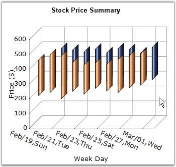

Hi Lo Chart is a special kind of chart that is normally used in stock analysis. They are typically used to display error bars or the trading range of a stock for each period.
The Hi Lo Chart expect two y values to be specified in the series. One value should represent the high and the other value should represent the low stock price for the period. This can be specified in any order.

Figure 71: Chart displaying Hi Lo Series
Chart Details
|
Details | |
|
Number of Y values per point |
2 |
|
Number of Series |
One or More |
|
Cannot be Combined with |
Pie, Bar, Stacked Bar charts, Polar, Radar |
Hi Lo series can be added to the chart using the following code.
|
[C#]
// Create chart series and add data points into it. ChartSeries series = this.ChartWebControl1.Model.NewSeries("Series Name",ChartSeriesType.HiLo); series.Points.Add(0, 1, 3); series.Points.Add(1, 3, 4); series.Points.Add(2, 4, 8);
// Add the series to the chart series collection. this.ChartWebControl1.Series.Add(series); |
|
[VB.NET]
' Create chart series and add data points into it. Dim series As ChartSeries = Me.ChartWebControl1.Model.NewSeries("Series Name", ChartSeriesType.HiLo) series.Points.Add(0, 1, 3) series.Points.Add(1, 3, 4) series.Points.Add(2, 4, 8)
' Add the series to the chart series collection. Me.ChartWebControl1.Series.Add(series) |